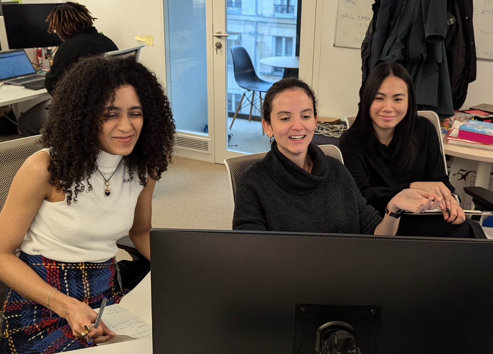
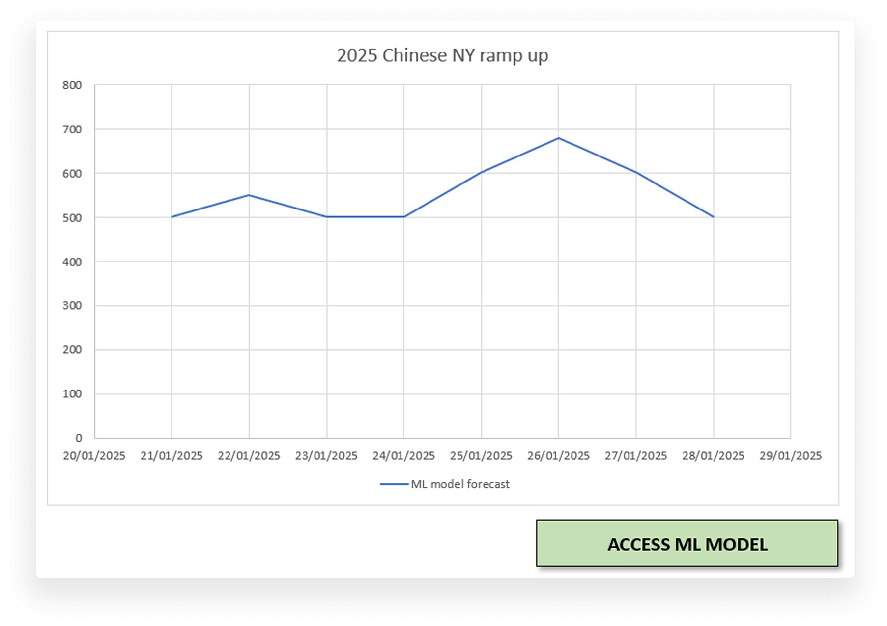
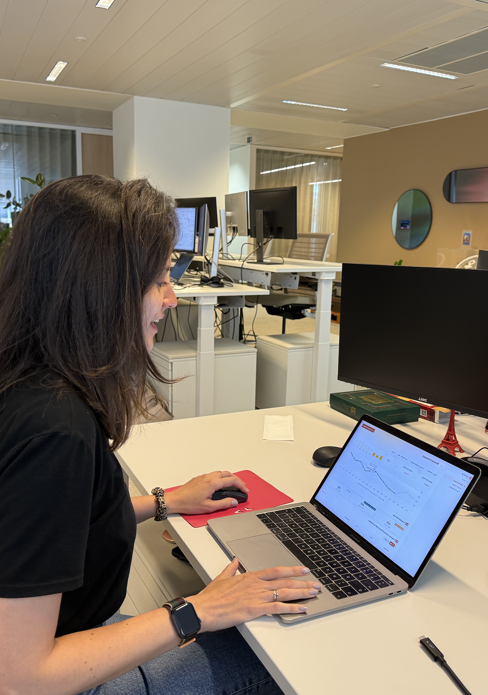
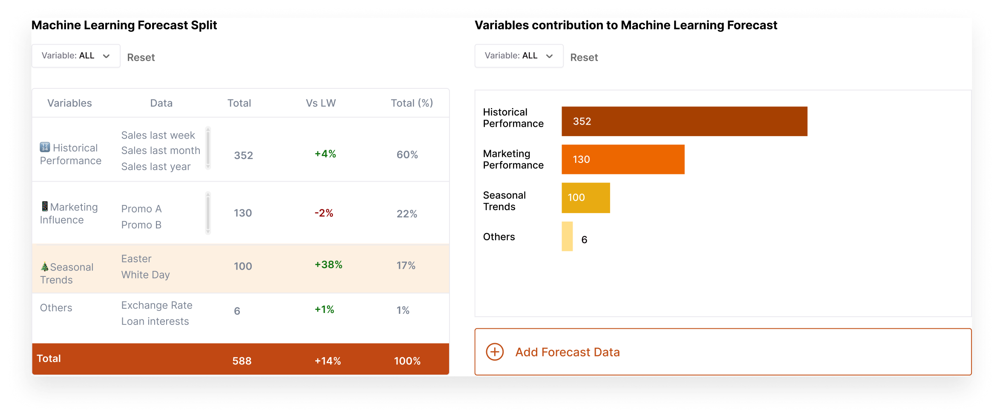
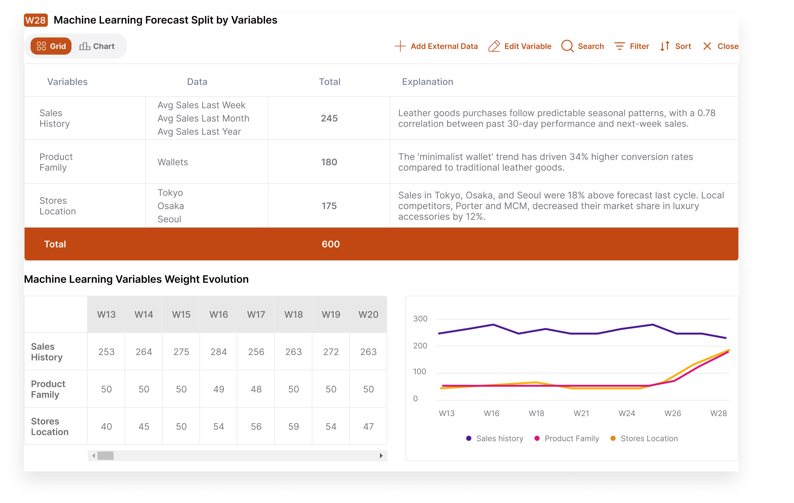
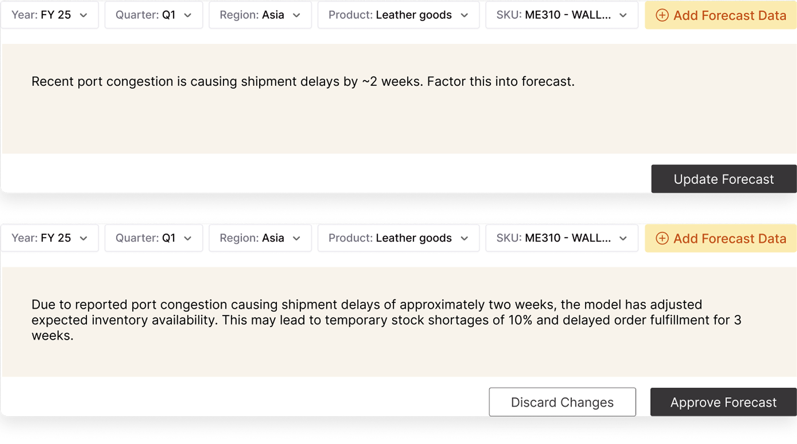
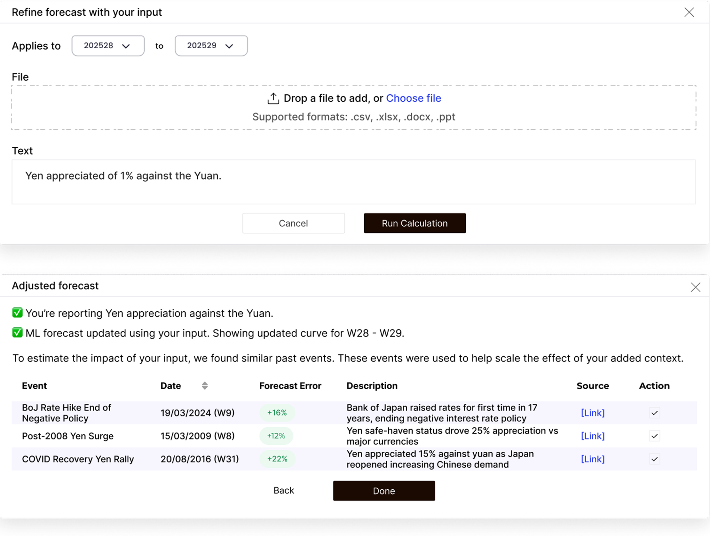

Project Scope
Sep 2024 – July 2025
Team
- Product Designer / UX UI Designer: Lena Perrier
- Product Designer: Nhung N.
- Product Management: Diane DL.
- Product Management: Rémi G.
Challenge
Incite forecasters to rely more on AI predictions
Despite massive investments in AI accuracy, forecasters at Louis Vuitton, Decathlon, Michelin, and Renault are rejecting machine learning predictions.
This undermines supply chain decisions worth billions of euros.
Understanding workflow
Forecasters make contextual based decisions
We started by interviewing and shadowing forecasters to understand their current forecasting process.
- Gather historical data. Collect past sales data.
- Review baseline predictions. Analyze operational research and machine learning predictions.
- Apply business context. Incorporate external factors like currency fluctuations, events, and market trends.

Shadowing forecasters to understand their workflows
Problem
Forecasters avoid AI predictions they can't explain or trust
Black box results undermine trust
Through user interviews we found that forecasters can't explain the reasoning behind AI outputs to stakeholders, making the predictions unusable.
AI models do miss contextual information
We used quick & dirty prototypes to further investigate the problem and identified another challenge: unpredictable events whose impact forecasters want to gauge.


Using quick & dirty prototype to better understand forecasters pain points
Opportunity
Building transparent and trustworthy AI predictions
Hypothesis
If we show forecasters which factors influenced the AI model, they will be able to better understand and take into account AI predictions to their forecast.
If we let forecasters enrich AI models with their knowledge of external events, they will better trust AI results and rely more on AI-driven insights.
Exploration 1
Explaining Machine Learning Results
We conducted tests and iterated on those with 15 forecasters.
Initial testing revealed that giving forecasters raw numbers of factors going into machine learning predictions weren't enough. Users needed to understand how these factors actually impacted their forecasts.
I pivoted to providing contextual information and detailed factor evolution to better show impact.

Conducting user tests through a fictional use case
Before

After

Exploration 2
Adding External Data
Our design challenge was identifying which types of data forecasters needed to layer onto AI predictions.
Initial tests failed as we assumed forecasters would use news, but they don't follow it.
Through iterations, we learned they prefer keywords for known events like currency exchange rate evolution or internal data like price changes.
Forecasters also rejected the feature due to lack of trust to AI results. We added context and let them control which data feeds the AI calculations, which proved successful.
Before

After

Results
Now I get it!
Companies' feedback
"At our organization, we have low usage of ML, and both features [explanations and adding external data] could lead to adoption of models that are seemingly well-designed but whose completeness forecasters doubt." Company A
"We see a great opportunity in the first feature [explainability] because ML is powerful today. We're working on user trust in AI – explainability allows the user to let go and no longer touch/interfere with the signal." Company B
"Regarding adding contextual information, it can be useful but for the people who develop the model. Since there's a risk of hallucination, it can be dangerous for users. They risk being very quickly disappointed. It might be valuable to develop this feature for data scientists who would log these events." Company C
↳ KPIs Ideas
- % rejected AI predictions
- % altered AI predictions
- gap between AI predictions and human predictions